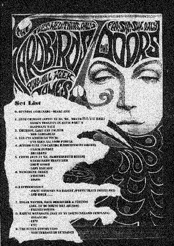

* 일시 : 1995년 8월 12일 토요일
* 장소 : Led Zeppelin (신촌)
* 참석자 :
* 발표자 : 김 남 웅(Neo-Zao)
0. Opening (Serenade - Ozaki Ami)
1. King Crimson
(April 29~30, '84, Tokyo 간이보험 홀)
- Lark's Tongues In Aspic Part II
- Elephant Talk
2. Emerson, Lake, And Palmer
- The Barbarian
3. Yes ('72 American Tour)
- I've Seen All Good People
4. Jethro Tull ('80 Canada Hammersmith Odeon)
- Black Sunday
- Aqualong
5. Camel (May 11 '84, Hammersmith Odeon)
- Stationary Traveller
- Snow Goose
6. Tangerine Dream - Phaedra

0.2 Intermission
( Jikyu Shyonen Wa Hashiru /
Prism Train - Ozaki Ami)
7. Edgar Winter & Rick Derringer
(Jan. 24 '90 Tokyo Mza Ariake)
- Frankenstein
8. Kazumi Watanabe ( May 22 '87 Tokyo Nakano Sunplaza)
- Melancho
- City
9. The Super Guitar Trio
- Mediterranean Sundance